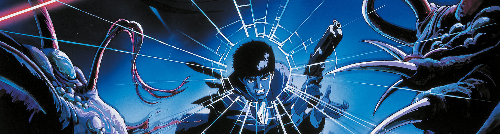
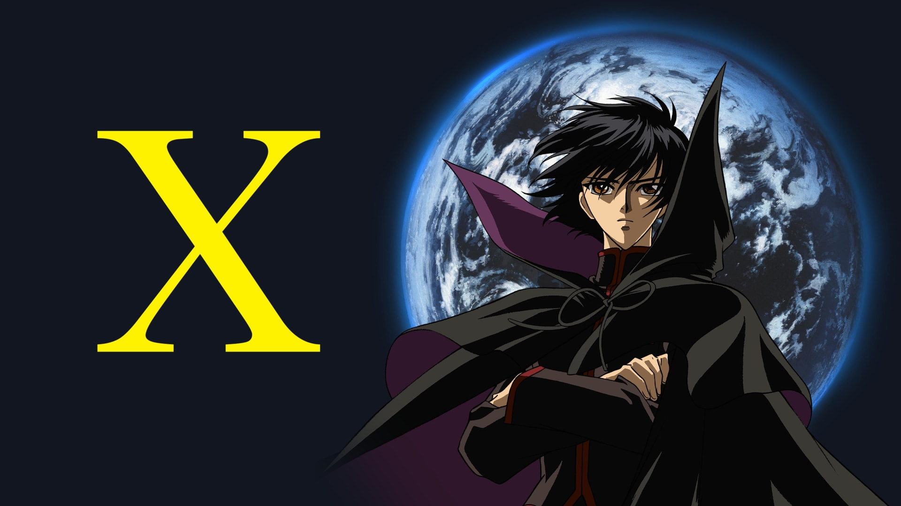

Wicked City
A tribute to Kawajiri's adult Anime Movies

A deep dive into Yoshiaki Kawajiri's adult animation and dark tone movies, such as Ninja Scroll, Vampire Hunter D: Bloodlust, The Animatrix and Wicked City.
Main Movies
Wicked City (1987)
Demon City Shinjuku (1988)
Ninja Scroll (1993)
Vampire Hunter D: Bloodlust (2000)
Highlander: The Search for Vengeance (2007)
OVAs
Goku Midnight Eye (1989)
Cyber City Oedo (1990)
Anthologies
Neo Tokyo / Manie-Manie (1987)
The Cockpit (1994)
The Animatrix (2003)
TV Series
X (2001)

Misc.
Documentary
Interview (ENG subtitles)
VIDEO
VIDEO
⬆︎ RETURN UP ⬆︎
About : The purpose of these pages is to cast a light on Yoshiaki Kawajiri's most important pieces of work. Kawajiri-san worked as a screenwriter, supervisor, character designer and key animator on an impressive number of other projects. Refer to the dedicated Wikipedia article for more informations > HERE